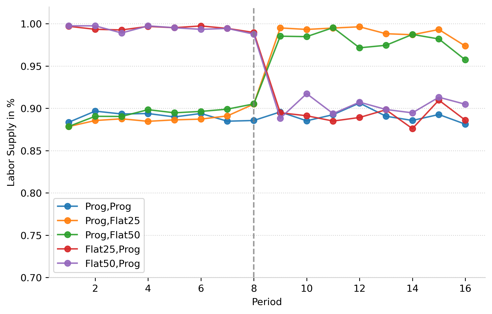
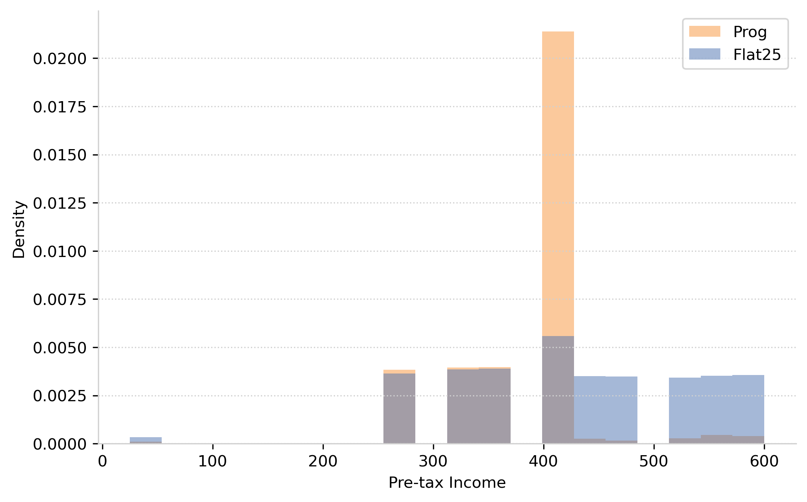

Replicating a Lab Experiment#
We replicate the experimental framework of [Pfeil et al., 2024] to measure labor supply responses to changes in effective and marginal tax rates using LLMs instead of human subjects.
Labor Supply Responses to Notches#
Tax System |
PKNF (2024) |
LLM (GPT-4o-mini) |
|---|---|---|
Progressive (25% to 50%) |
78-88% |
89-97% |
Flat 25% |
46-54% |
45-52% |
Flat 50% |
46-54% |
45-52% |
Key findings:
LLMs show slightly stronger bunching behavior at the notch (≈10 percentage points higher)
Under flat taxes, LLM responses closely match human subjects
The notch appears more salient to LLMs than to human participants
Responses by Labor Endowment#

Fig. 1 Labor supply by potential income under progressive vs. flat tax systems for LLM simulations.#
Both humans and LLMs show:
No behavioral differences for endowments ≤ 20 (below the notch)
Growing divergence between flat and progressive systems for endowments > 20
Clear evidence of optimization around the tax notch
Dynamic Responses Across Rounds#
{kind=link}

Fig. 2 Labor supply responses by treatment group and round for LLM simulations. The vertical line indicates the tax reform at round 8.#
Notable differences:
Human subjects: Noisy responses with some learning effects
LLMs: Very consistent responses with sharp transitions at reform
Labor utilization: LLMs use nearly 100% of endowment under flat taxes vs. 85-93% for humans
Differences-in-Differences Analysis#
Variable |
PKNF (2024) |
LLM |
|---|---|---|
Post |
-0.001 |
0.000 |
(0.003) |
(0.001) |
|
Treated |
-0.015** |
0.000 |
(0.007) |
(0.002) |
|
Post × Treated |
0.083*** |
0.095*** |
(0.010) |
(0.003) |
|
R² |
0.245 |
0.812 |
The treatment effect (Post × Treated) shows:
Human subjects: 8.3% increase in labor supply when moving from progressive to flat tax
LLMs: 9.5% increase in labor supply
We cannot reject equality of these coefficients at the 5% level
Elasticity of Taxable Income from Bunching#
{kind=link}

Fig. 3 Distribution of pre-tax income under flat 25% tax (blue) and progressive tax system (orange). The vertical line marks the notch at income = 400.#
Using the bunching estimator with:
Notch location: z* = 400
Dominated region: Δz* = 200
Tax rate change: Δt = 0.25
Initial rate: t = 0.25
We obtain: ETI ≥ 0.53
This represents a lower bound as the experimental design constrains responses within the dominated region.